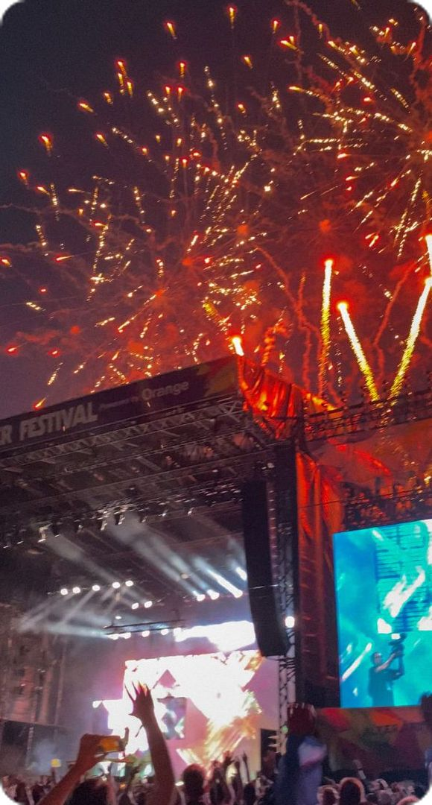

Kultura i Tradicija Mostara
Mostar je poznat po svojoj bogatoj kulturi i tradiciji koja spaja razne utjecaje kroz stoljeća.
Mostarski skokovi sa Starog Mosta
Ova stoljetna tradicija simbol je hrabrosti i vještine. Svake godine hrabri skakači izvode spektakularne skokove u rijeku Neretvu.

Mostarska Kuhinja
Gastronomija Mostara spoj je osmanske, mediteranske i balkanske kuhinje. Probajte specijalitete poput ćevapa, bureka i baklave.
 - Recipes From Europe.jpg)
Festival Mostarsko Ljeto
Jedan od najvažnijih kulturnih događaja u regiji, s koncertima, izložbama i kazališnim predstavama.
